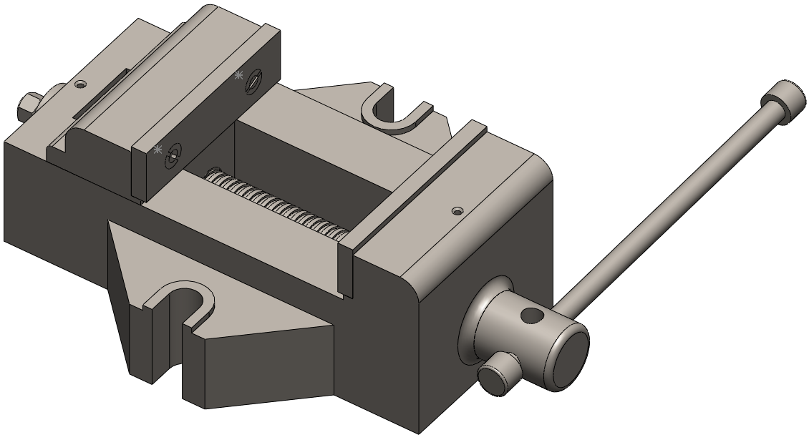
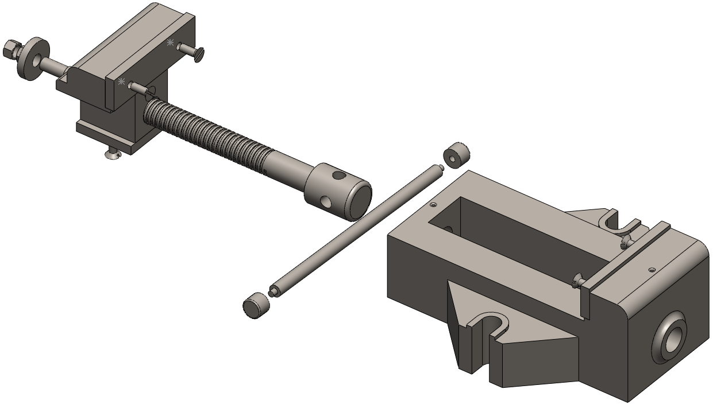
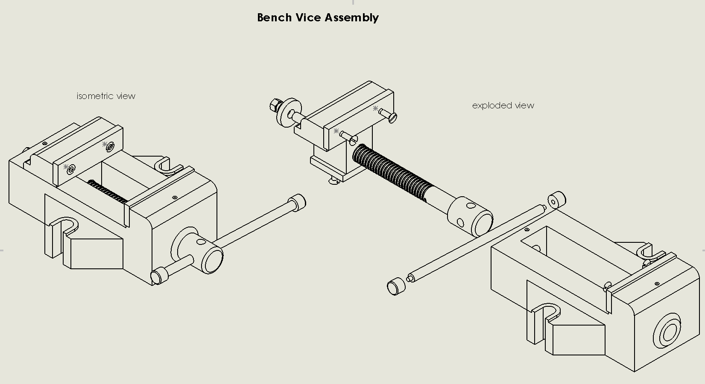

PROJECT 01
Bench Vice Assembly
SolidWorks modelling exercise produced from engineering drawings, covering part modelling, assembly, threaded components, exploded views and technical drawing.

Overview
Modelled and assembled a multi-component bench vice from engineering drawings, including the main body, sliding jaw, lead screw, handle and associated components.
The project was completed as a guided SolidWorks modelling exercise to develop practical experience with parametric modelling, assemblies and engineering drawings.
Modelling Process
- Main body created using extruded profiles, cuts, fillets and mirrored features.
- Sliding jaw modelled as a separate component and constrained within the assembly.
- Lead screw created using revolved geometry and a helical thread feature.
- Handle and associated retaining components modelled individually.
- Final components assembled using standard and mechanical mates.
Exploded Assembly

Assembly Drawing

Technical Work
- Parametric modelling of individual components
- Assembly using standard and mechanical mates
- Threaded and revolved components
- Exploded assembly configuration
- Technical assembly drawing